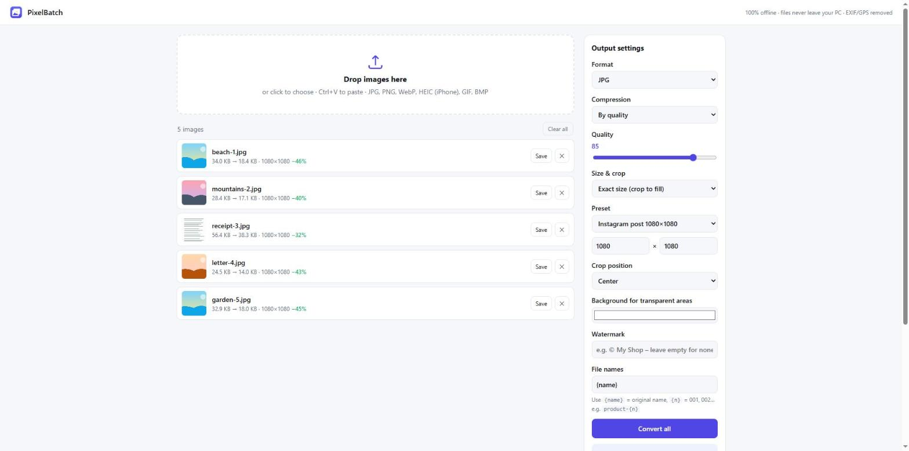

After clicking Convert all: each picture shows its old and new file size. Save stores one picture; Download all (.zip) on the right stores all of them.
Open PixelBatch.
Drag your pictures onto the box that says Drop images here, or click it and choose them. You can also press Ctrl+V to paste a copied picture.
On the right, choose the Format you want: JPG, PNG or WebP.
Click Convert all. Each picture shows its new size when it is done.
Click Download all (.zip). A ZIP file with all converted pictures is saved in your Downloads folder. Right-click it and choose Extract All to open it.
PixelBatch reads JPG, PNG, WebP, GIF, BMP and HEIC photos from an iPhone. Your original files are never changed.
2. Which format should I choose?
JPG – best for photos. Small files, opens everywhere.
PNG – best for logos, screenshots and pictures with a see-through background. Larger files.
WebP – the smallest files, good for websites. Some older programs cannot open it.
3. Make files smaller
By quality: move the Quality slider. 85 looks almost like the original; 60–70 is much smaller and still fine for e-mail.
Max file size (KB): type a number, for example 200. PixelBatch lowers the quality of each picture until it is under that size – useful when a website has an upload limit.
Making the picture smaller in pixels (next section) reduces the file size far more than lowering the quality.
4. Resize and crop

Size & crop set to Exact size with the preset Instagram post 1080×1080. Every picture comes out at exactly that size.
Under Size & crop choose one of these:
Keep original size – only the format or quality changes.
Max width or Max height (px) – larger pictures are shrunk to this size; the shape stays the same. 1600 is good for e-mail, 1080 for social media.
Scale (%) – 50 makes every picture half as wide and half as tall.
Crop to aspect ratio – cuts the picture to a shape such as 1:1 square or 16:9 widescreen.
Exact size (crop to fill) – every picture comes out at exactly the size you choose. Pick a Preset such as Instagram post 1080×1080, YouTube thumbnail 1280×720 or ID photo 3×4, or choose Custom and type the width and height.
Crop position decides which part is kept when a picture is cut: Center, Top, Bottom, Left or Right. Choose Top for portraits so heads are not cut off.
Background for transparent areas is the color used where a PNG is see-through when you save it as JPG.
5. Your privacy: location data is removed
Photos from phones often contain hidden information such as the place where they were taken (GPS) and the camera model. PixelBatch removes this information from every converted picture automatically, so it is safe to share them.
6. Watermark your photos (Pro)
Type your name or shop name in Watermark.
Choose where it goes: a corner, the center, or Tiled to repeat it across the whole picture.
Choose white or black text, then set Size and Opacity (how see-through it is).
7. Rename all files at once (Pro)
In File names type a pattern. Use {name} for the original name and {n} for a running number 001, 002, 003 …
For example holiday-{n} gives holiday-001.jpg, holiday-002.jpg, and {name}-small keeps the old name and adds -small.
8. Save straight into a folder (Pro)
Click Save to folder… and choose a folder. The converted pictures are written there directly, without a ZIP file.
9. Free version and Pro
The free version converts up to 20 pictures at a time with all format, quality, resize and crop settings. Pro is a one-time purchase and adds unlimited pictures per batch, watermark, batch rename and save to folder. Click ★ Get Pro at the top to see the price, or Restore purchase if you bought it before.
10. If something goes wrong
A picture shows an error: the file may be damaged or in a format PixelBatch cannot read. Try opening it in the Photos app first.
Only 20 pictures were converted: that is the limit of the free version. Convert the rest in a second batch, or get Pro.
The pictures look blurry: raise the Quality slider, or choose a larger Max width.
Questions or problems? Write to thequan03072002@gmail.com. PixelBatch works offline and your files never leave your PC.